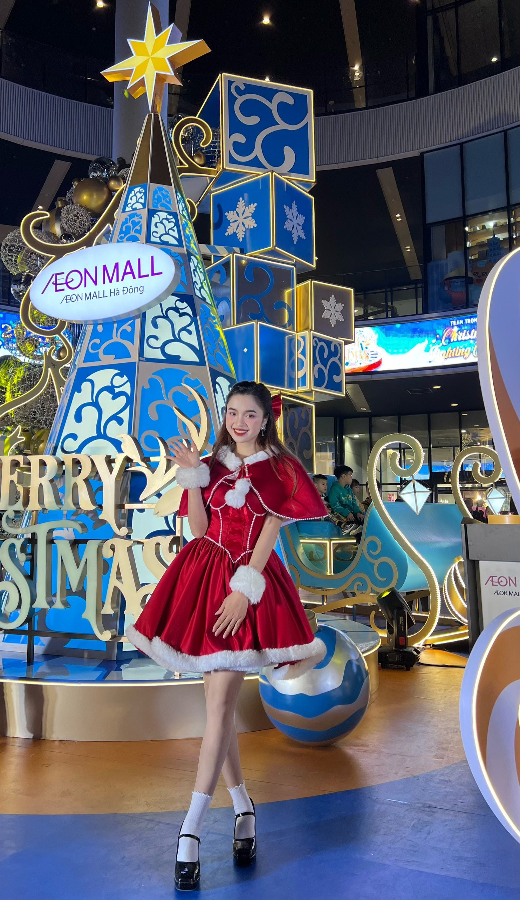
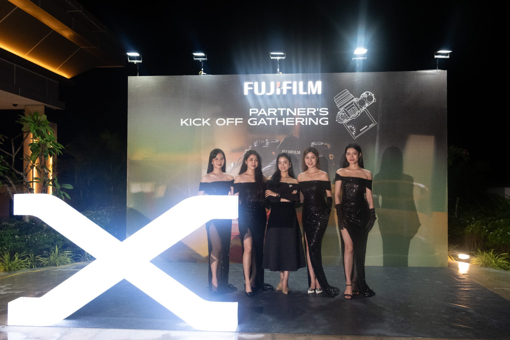
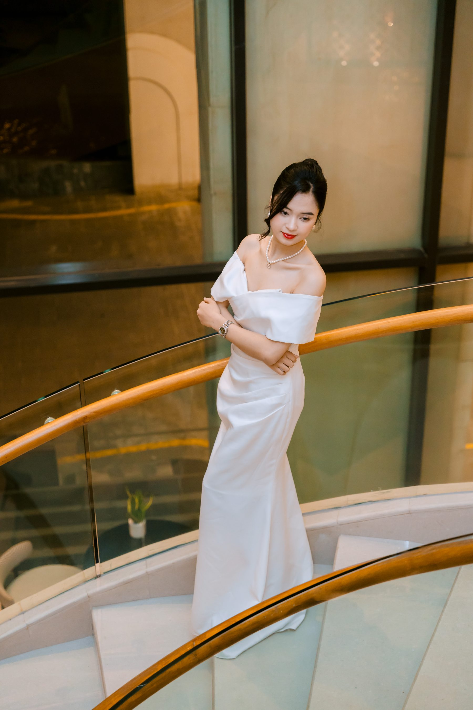

Một MC song ngữ không bán giọng nói. Cô bán khoảnh khắc: cái khoảnh khắc khán giả Việt và khách quốc tế cùng gật đầu, cùng cười, cùng vỗ tay — và cảm thấy được dẫn dắt một cách thanh lịch.
Cindy là người dẫn chương trình song ngữ điềm tĩnh, sang trọng — chuyên cho gala, hội nghị doanh nghiệp và sự kiện thương hiệu cao cấp tại Việt Nam.
Khi Cindy bước lên sân khấu, không khí phải nâng chứ không nóng. Cô là chủ nhân của khoảnh khắc — sang trọng, có quyền lực mềm, không bao giờ mất kiểm soát.
Tiếng Anh và tiếng Việt trong miệng Cindy không phải hai ngôn ngữ rời rạc — chúng là một dòng chảy. Cô dịch văn hoá, dịch nhịp điệu, dịch sự tinh tế.
Portfolio không phải để Cindy khoe — nó là công cụ booking. Phải nói chuyện với 3 nhóm người, theo thứ tự ưu tiên.
Họ tìm gì: bằng chứng đã làm cho brand cùng tier (Toyota, Yamaha, LG…), khả năng song ngữ thật, sự tự tin trên sân khấu lớn.
Họ quyết định trong: 30 giây đầu của Hero + Brand Wall.
Họ tìm gì: showreel, profile PDF tải nhanh, contact rõ ràng, lịch trống. Họ là người quay lại nhiều lần.
Họ quyết định trong: showreel 60s + tốc độ phản hồi.
Họ tìm gì: năng lượng sân khấu lớn, khả năng giữ đám đông ngoài trời, cách Cindy kết nối với khán giả. Tone hơi ấm hơn corporate.
Họ quyết định trong: ảnh festival + showreel sự kiện ngoài trời.
Đề xuất 5 tagline song ngữ. Hướng #01 là recommended — vì nó vừa nói được hai ngôn ngữ, vừa có hình ảnh "cây cầu" thanh lịch, lại không tự đề cao.
Đây không phải khẩu hiệu treo tường. Mỗi giá trị tương ứng với một cam kết khán giả có thể nhìn thấy trên sân khấu.
Sự cố sân khấu là chuyện thường. Cindy không nói nhanh hơn — cô nói chậm hơn, để người khác bình tĩnh lại.
Không phải "nói được tiếng Anh" — là chuyển kênh giữa hai ngôn ngữ tự nhiên như thở, không lệch nhịp văn hoá.
Đứng trên sân khấu mà không cần "diễn". Khán giả nhìn vào là tin được đây là người chủ trì, không phải người đọc.
Mỗi script được Cindy đọc lại 3 lần trước event. Mỗi tên thương hiệu đều phát âm đúng. Nghề này không có "chắc là được".
Voice trên website phải nghe giống Cindy trên sân khấu: điềm tĩnh, sang trọng, có chút humor sâu. Không exclamation, không emoji, không "siêu", không "đỉnh".
Send a brief
"Gửi brief sự kiện"
(không "Liên hệ ngay!")
Tell me about your event
"Kể tôi nghe về sự kiện của bạn"
Currently away on stage.
"Đang ở sân khấu. Sẽ trả lời trong 24h."
Palette chính lấy cảm hứng từ tạp chí thời trang Việt cao cấp: nền giấy ngà, chữ mực đen ấm, accent vàng champagne. Hai biến thể (Plum & Emerald) cho dịp đặc biệt.
Cảnh báo: Không dùng vàng Gold trên nền Cream Tint — contrast quá thấp. Gold chỉ trên nền Paper trắng nhạt hoặc Ink đen.
Typography là vũ khí thanh lịch nhất của portfolio này. Quy tắc: chữ tiếng Anh là nhân vật chính. Chữ tiếng Việt là chú thích thanh lịch dưới nó.
Cindy có một thư viện ảnh dày dặn. Chiến lược là phân làm 3 cluster sự kiện đúng với thực tế công việc — và 1 cluster portrait editorial tách riêng để dùng cho hero và about.



Bối cảnh ballroom 5★, đèn ấm, khán giả mặc suit. Cindy đứng sân khấu trang trọng, micro cầm tay. Ảnh có cả tổng thể khán phòng + close-up Cindy.
Brand examples: Toyota, Yamaha, Hyundai, FLC.
Sân khấu ngoài trời hoặc trung tâm thương mại, light setup nhiều màu, năng lượng cao. Cindy mặc trang phục theo concept (váy đỏ Christmas, áo dài lễ hội, dạ hội màu).
Brand examples: AEON Mall, Fujifilm, lễ hội văn hoá.
Dạ tiệc tối, ánh sáng vàng ấm, dress code formal. Cindy mặc dạ hội đen / trắng / vàng champagne, MC cầm tablet. Tone trầm, sang.
Brand examples: Fujifilm Partner Kick-off, year-end gala doanh nghiệp.
Cindy à — phần ảnh là phần duy nhất tôi cần bạn duyệt thủ công. Sau khi đọc xong Blueprint, bạn sẽ là người chỉ định top 12 ảnh chia đều 3 cluster (mỗi cluster 3-4 ảnh đỉnh nhất). Tiêu chí: (1) thấy rõ mặt + biểu cảm chuyên nghiệp, (2) thấy được brand context (logo backdrop, sân khấu), (3) chất lượng ánh sáng đẹp. Tôi sẽ đặt placeholder ở Portfolio.html — bạn chỉ cần kéo thả ảnh vào.
Portfolio chỉ một trang dài (one-page scroll). Đừng chia nhiều trang — booking decision không cần navigation phức tạp.
Padding dọc giữa sections: 120-160px desktop / 72-96px mobile. Đừng nén — khoảng trắng là phần của thiết kế.
Hero là phần duy nhất khán giả chắc chắn sẽ thấy. Mọi quyết định khác đều đến từ đây.
Text trái — portrait phải. Mặc định. Phù hợp 80% trường hợp.
Dramatic hơn. Cần ảnh portrait có nhiều khoảng trống và tone tối.
Sang nhất, "boutique" nhất. Hợp khách wedding cao cấp.
Đây là vũ khí mạnh nhất của portfolio. Người booking nhìn vào logo brand đã làm để định giá Cindy.
Lưới 6 cột, logo monochrome, không text. Section heading: "Trusted by" + small caption. Đây là hướng editorial, để brand tự nói.
Một dải logo cuộn ngang chậm (12s/loop). Dùng cho mobile vì grid 6 cột quá nhỏ. Trên desktop có thể thêm để tạo motion.
Trên thực tế đa số inquiry đến từ producer xem trên iPhone giữa hai cuộc họp. Mobile không phải bản thu nhỏ — nó là một thiết kế riêng.
Đây là USP của Cindy — website phải thể hiện được sự song ngữ chứ không phải có nút "Switch to EN".
Mỗi headline có 2 dòng: tiếng Anh là dòng chính, tiếng Việt italic nhỏ hơn. Body text mặc định tiếng Anh, có nút toggle cho VI body.
Hai phiên bản hoàn chỉnh, switch giữa. An toàn nhưng "ẩn" mất USP — khán giả Anh không thấy tiếng Việt.
Avant-garde, kiểu poet. Đẹp cho intro section nhưng không scale cho toàn bộ portfolio.
Đây là plan thực thi 4 tuần để Cindy đi từ tài liệu này đến website live.